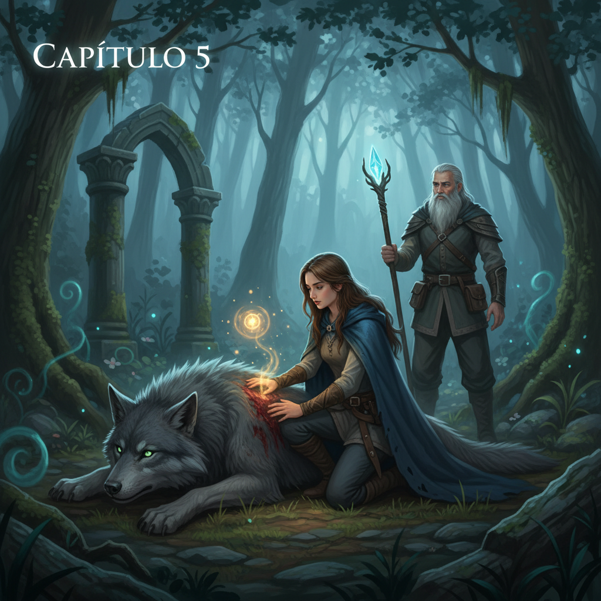

Capítulo 5
2026-02-23
Isabel se aferró más fuertemente al asiento mientras Eduardo manejaba con una precisión inusual, los dedos apretados en el volante como si temiera que cualquier distracción lo llevara a un destino peor. El cielo se había tornado negro y pesado, envolviendo el mundo en una manta de oscuridad.
"¿Dónde vamos?" Isabel preguntó, su voz apenas un murmullo.
Eduardo le dedicó un rápido vistazo antes de volver a centrarse en la carretera. "No lo sé", admitió con sinceridad. "Pero tenemos que salir de aquí." El coche avanzaba lentamente, como si el camino mismo se resistiera a ellos.
La tensión era insoportable; cada momento parecía prolongar su agonía. Isabel sabía que estaban jugando con fuego y que el mal no podría ser aplacado de esa manera. El sobre blanco en sus manos parecía un farol ciego, guiándolos hacia una oscuridad que no estaba dispuesta a mostrar.
Al cabo de unos minutos, Eduardo paró el coche en un camino de tierra desolado. "Aquí", dijo simplemente. Isabel asintió, bajando del vehículo con manos temblorosas.
Eduardo la siguió, su mirada fija en el sobre que ella aún sostenía. El aire era denso y cargado de electricidad, como si la noche misma se estuviera preparando para algo inminente.
Isabel buscó una señal alguna, cualquier indicación de dónde podrían esconderse o qué hacer a continuación. Pero el camino estaba vacío; solo había los dos y la noche que parecía más vasta e indescifrable cada segundo.
"¿Qué crees que estén queriendo?" Isabel preguntó, susurro en el viento de la noche.
Eduardo encendió una linterna, iluminando las cercanías con un haz de luz tenue. "No lo sé", respondió, su voz apenas audible sobre el zumbido constante del coche. "Pero nos han dado instrucciones y eso significa que tenemos que seguirlas." Isabel asintió, tomando profundas respiraciones para calmarse.
El hombre con el sombrero había sido claro: eran parte de un juego, y ahora debían jugarlo bien. El sobre en sus manos era su única pista; era necesario abrirlo y ver lo que contenía. Pero cada vez que intentaba hacerlo, la mano se le cerraba alrededor del papel como si temiera el misterio que ocultaba.
Finalmente, Eduardo le entregó la linterna a Isabel. "Vas tú", dijo con firmeza. Ella asintió y, agarrando firmemente el sobre, lo abrió lentamente. Un viento frío pareció entrar con ella al abrirlo, llenando el aire de una atmósfera cargada.
Dentro del sobre había un papel doblado en varias capas; era evidente que estaba sellado para no ser descubierto fácilmente. Isabel lo desdobló lentamente, su corazón latiendo con fuerza contra sus costillas. La letra era clara y firmemente escrita:
"Reúnete con nosotros en la casa abandonada a las 23:00. Si quieres seguir viviendo, no falles."
Eduardo se acercó para leer el mensaje también. "Es una amenaza", susurró. Isabel asintió, sintiendo cómo el miedo crecía en su interior como una ola de mareo.
La casa abandonada era un edificio mal conservado, cubierto de musgo y desmoronándose lentamente sobre sí mismo. Su forma se volvía inestable bajo la luz tenue de la linterna, pareciendo esconder secretos oscuros en cada rincón.
Eduardo miró a Isabel con una mezcla de determinación e incertidumbre. "Creo que deberíamos ir", dijo finalmente. Isabel asintió y juntos se dirigieron hacia la casa, sus pasos resonando débilmente en el aire vago.
La puerta crujía al abrirse, revelando un interior frío y vacío. Las paredes estaban cubiertas de polvo, los muebles roídos por la desolación del tiempo. Un olor a moho llenaba el lugar, creando una atmósfera gélida que parecía respirar con ellos.
Eduardo encendió más luces, iluminando cada rincón del viejo edificio. Isabel se sintió como si estuvieran en un escenario de pesadilla, el miedo empapándola poco a poco. El sobre volvía a su mano, como una conexión con algo que no quería enfrentar.
Un silencio tenso reinaba en la casa. Ningún ruido, solo los latidos acelerados de sus corazones y el eco incesante de su respiración. Eduardo se acercó a ella, poniéndole una mano en el hombro con fuerza reconfortante.
"No estamos solos", murmuró, su voz apenas audible. Isabel asintió, sintiendo cómo la presión en su pecho aumentaba cada vez más. Había sido un error aceptar, pero ahora no podían regresar atrás.
La noche se apretó sobre ellos con una fuerza abrumadora; el cielo era negro y las estrellas ocultas por nubes que parecían ser solidas. El aire estaba cargado de electricidad, como si la luna misma no pudiera soportar la tensión que emanaba del edificio.
Finalmente, una figura oscura se materializó en la entrada principal. Era un hombre con el sombrero, su presencia inquietante y abrumadora. "Bienvenidos", dijo simplemente, su voz resonando en el silencio de la casa. Eduardo asintió, sabiendo que ahora era solo cuestión de tiempo para averiguar qué estaba realmente pasando.
El hombre se acercó a ellos, su mirada fija y desafiante. "¿Listos para jugar?" preguntó, extendiendo una mano hacia Isabel. Ella asintió débilmente, agarrándola con fuerza mientras Eduardo la seguía de cerca. La noche parecía respirar más fuerte alrededor de ellos, como si estuvieran en el centro de un huracán.
La casa abandonada se volvió una trampa, cada rincón ocultando misterios y amenazas. Isabel y Eduardo sabían que la noche misma parecía haberles tomado por sorpresa, forzándolos a enfrentar sus miedos más profundos en la penumbra.
El hombre con el sombrero los condujo hacia un laboratorio oculto detrás de una pared falsa. Allí, descubrieron que estaban involucrados en algo mucho mayor y peligroso de lo que habían imaginado. La verdad sobre su misión se iba desvelando poco a poco, llenándolos de un miedo indescriptible.
La tensión era insoportable; cada segundo parecía una eternidad mientras Isabel y Eduardo luchaban por comprender lo que les esperaba. El sobre en sus manos se había convertido en un farol ciego, guiándolos hacia un destino incierto pero inevitable.
### IMAGE_PROMPT Un grupo de figuras oscuras rodea a Isabel y Eduardo frente a una casa abandonada. ### SUMMARY Isabel y Eduardo siguen las instrucciones del sobre y llegan a una casa abandonada, donde se enfrentan a un hombre con el sombrero que los invita a jugar "el juego". Descubren un laboratorio oculto y se ven envueltos en una trama mucho más peligrosa de lo que imaginaban.Mañana, nuevo capítulo.
Lo que dicen los lectores
Vuelvo cada día. Engancha de verdad.
El gancho del final me tiene enganchado.
Ya lo he recomendado. Muy bien escrito.